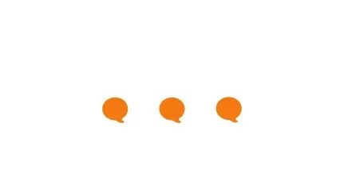
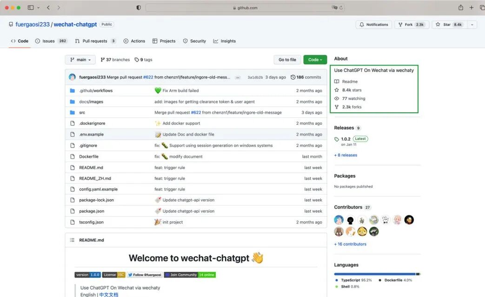
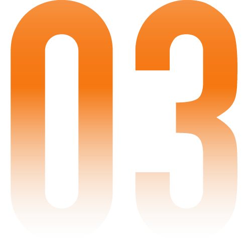
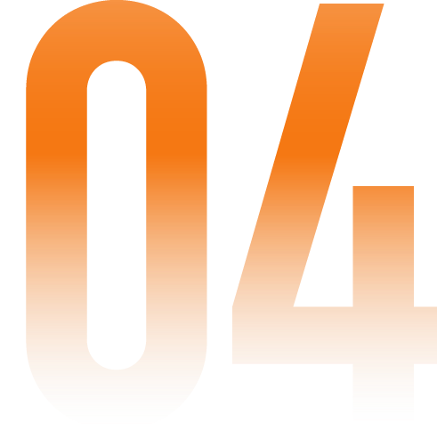
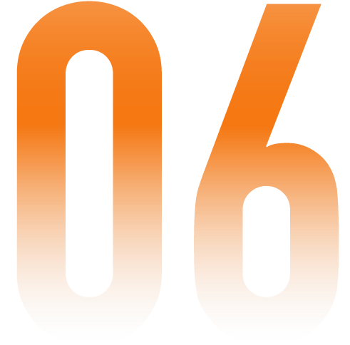

- wechaty.js.org -

随着专为对话而生的 ChatGPT 火爆，Wechaty 再次成为开源社区里备受关注的项目。
过去 3 个月里，有数十个基于 Wechaty 把 ChatGPT 接入到聊天软件的项目在 GitHub 上开源，最受欢迎的项目已获得 8K+ Stars。

通过 Wechaty，开发者仅需要 6 行代码就可以把聊天软件变成 Chatbot。增加几行代码就可以接入 ChatGPT、Stable Diffusion 等 AI 模型，获得丰富的对话能力，让聊天软件成为助力创作、提高效率的 AI 工具。
本周末(25日-26日)，Wechaty 受邀参加 GAIDC 开源集市，与更多 AI 项目和开发者一起切磋，共享“AI 狂欢”。
不管你是萌新的AI小白，想多接触行业的方方面面
还是在职开发者，想精进自己的技能，或探索下其他职场可能性
或是技术大牛，想从算法-算力-框架多视角下探讨大模型技术前沿应用实践
或是科研爱好者，想知晓人工智能如何助力科学研究与发现(AI for science)
这场在临港中心举办的这场开发者先锋大会，一定不要错过！大会将有多元话题的前沿论坛，诸如AI编程、AI芯片、AI+健康、AI智能出行、AI+机器人、元宇宙等等，为你打开新世界的大门。活动现场，还有互动体验区、AI图书展，以及多个热门领域AI企业现场招聘会，鱼和熊掌都能品一品。当然，如果你对万花筒般丰富的开源技术、开源文化感兴趣，不妨也来开源集市瞧瞧！
- wechaty.js.org -
为了让广大开发者、非技术从业者伙伴们领略多彩的开源文化与项目价值，本次大会特别设立了开源集市专区，邀请15～20 家国内外知名开源社区或相关组织共同参与建设，展示开源魅力、分享社区成果，吸纳更多志同道合的伙伴加入开源的大家庭，一同打怪升级，成长路上相伴而行。地点：上海市浦东新区海港大道 555 号临港中心 二楼共享大厅（西侧通道2）值得再三划重点的是，开源集市不止面向技术开发者，也同样欢迎运营、产品、市场伙伴来一起交流切磋！
- wechaty.js.org -
本次集市活动召集了各个前沿技术方向的开源项目，既有用于大厂发起的用于深度图学习的开源框架，也有初创企业致力于解放创造力的新一代编程语言，还有只需 6 行代码，即可将任意聊天软件变成机器人的神奇工具！整个集市专区呈长条状，伙伴们入场时，会拿到一份 “集市游玩手册”(类似导览小册子)，介绍20个摊位对应的项目，以及集市专区的游戏玩法说明。每家社区会为伙伴们准备 1～3 个挑战任务（其中开发者的为技术类实战，非技术背景的朋友则是非coding的问题），顺利通关者可收获一定的“源力”点数，并兑换相应各社区周边礼品。并且，每个摊位每天都有10枚“天选开源人”贴纸（1枚=3个“源力点数”），奖励给来摊位深入交流探讨的伙伴。在集市专区出口处，大家可报上各自收获成果及相应联系方式；活动结束前的半小时再统计一遍，累计点数最多的，收获价值感满满的盲盒大礼盒（价值150～1000元不等），奖品信息拭目以待！
- wechaty.js.org -
为了尽可能丰富大家体验、加深对真实开源的理解，本次集市专区还有两大特色环节：01 开源团聚环节
25日下午13:30-17:00有组织2～3场团聚（每场60～90min），组局者有充分的自由度自发挥，可以是恳谈会、吐槽会、圆桌、工作坊等多元形式，话题也可以跳脱纯技术本身尽可能拓展延伸，大会官网也可同步信息，尽快和大家同步！02 开源开放麦
26号下午 13:00-15:00 在小舞台区域（离集市专区步行1～2min），各项目代表也会受邀上舞台，分享各自项目的建立初衷、发展状况和未来愿景等等，每家 5～6min 闪电演讲的时间，大家也别错过哦！
- wechaty.js.org -
扫描下方二维码或点击文末阅读原文快速报名。活动当天，会有 Wechaty 社区的伙伴在现场与大家互动。

- wechaty.js.org -
由世界人工智能大会组委会、上海市经济和信息化委员会、上海市人才工作领导小组办公室、中国（上海）自由贸易试验区临港新片区管理委员会共同指导，上海市人工智能行业协会和上海临港经济发展（集团）有限公司共同主办的2023全球人工智能开发者先锋大会（GAIDC）将于2023年2月25日—26日在上海举行。GAIDC始于WAIC上海人工智能开发者大会，历经三年发展沉淀，全面迭代升级。本届大会主题为“向光而行的AI开发者”，以AI开发者为核心，为AI开发者带来产业之光、科技之光、未来之光。大会在上海最早迎接日出的地方——临港，通过论坛、团聚、学习赛、项目路演、人才交流、书友会、互动体验等多个板块，聚焦专业前沿内容，联合超过20家国内外开源组织、开发者社区，力邀全球技术大牛、导师大咖和AI开发者共同线下参与，同时与上千万专业开发者线上互动交流，营造自由活泼氛围。